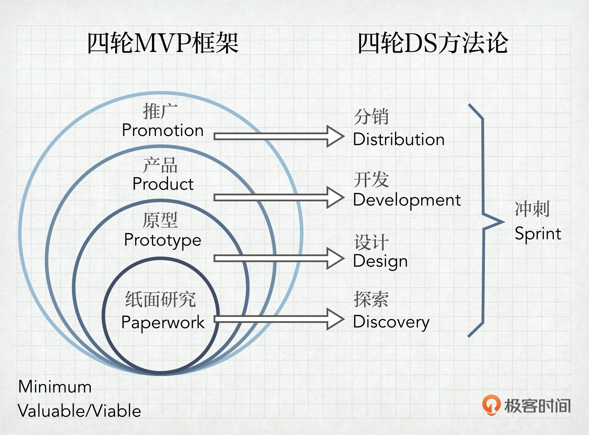
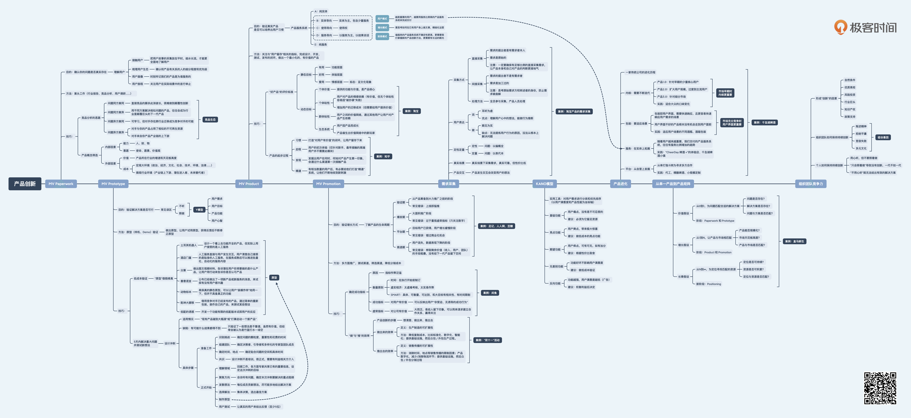

项目经理和产品经理最根本的差异其实就是目标的差异。项目经理通常强调完成任务，追求的目标可以“多快好省”这个词来概括——多，是希望项目范围尽量大； 快，是希望项目周期尽量短； 好，是希望项目质量尽量高；省，是希望资源消耗尽量少。这些目标，其实都是偏完成度相关的，很少涉及商业方面的考虑。
而产品经理则不同，通常，真正对一个产品整体负责的产品经理，他要考虑的更多是商业层面的内容，比如用户数、活跃度、收入、利润、市场占有率。很明显，这是最终的商业目标，而不是“多快好省”这样的过程目标。
由目标的差异找领导，项目经理更强调执行，是接到一个任务，正确地做事，产品经理更强调创新，是设定一个目标，做正确的事。

“加深用户理解”过程分为四个步骤：用户故事、用户生态、用户画像、用户旅程。自始至终，有没有产品并不是关键，关键是充分理解用户。
用户生态：在产品所涉及的领域中，有哪几种用户，他们之间的关系是什么。注意颗粒度、考虑边界、优先级。
理解用户：
- 收集海量的用户故事
- 从中提炼出用户生态
- 描绘关键用户的画像
- 分析核心的用户旅程

只要两个产品的目标用户是同一群人或者组织，那这两个产品在某种程度上都会形成竞争关系。竞争不是你死我活，也可以是互相成就。


Y模型：用心听，但不要照着做。对用户需求理解得要深，这叫用心听，但是给用户呈现的解决方案要尽量简单，把复杂留给自己，把简单留给用户，这中不照着做。

原型七种武器：
- 土耳其机器人：假功能，人工处理
- 酒店门童：假功能，人工服务
- 众筹
- 善意谎言：类似众筹，假装做出来了
- 动物标本：静态原型
- 乾坤大挪移：借竞争对手产品，包装后假装自己产品
- 低配的诱惑：开发一个功能的限的低配版本
设计冲刺


产品服务系统：能以一种集成的、有针对 笥的方式进行产品分类，精准地满足用户需求，有助于产品的创新。

好产品要同时满足用户目标和公司目标。
- 静态维度：依次让用户觉得有用（功能）、好用（体验）、爱用（情感）。
- 动态维度：个体价值（活靶子）、个体粘性（护城河）、群体粘性（增压器）、生态系统（培养皿）。

产品起步

验证期的产品，除非发现了定位的重大失误，否则应该围绕既定的核心用户，把重要的需求场景满足得越来越好，在单点上扎得足够深，而不要轻易去扩展满足更多需求、更不要去扩用户群体。这时候，运营主要关注的指标要和用户留存相关，典型的良性表现就是用户用了还想用，成为回头客，以及愿意主动推荐亲朋好友来用。
产品和用户是一起成长的，产品会随着用户的成长，用一个又一个的版本迭代来应对，经历无数次“验证、爆发、平台、衰退”的曲线叠加，最终，只有把用户当作产品的一部分，共创一个大的生态系统，才是王道。
真正成功的指标，是可以反映出用户“非受迫、无诱导的成功行为”的。
产品创新从无到有：想清楚（产品）、做出来（开发）、推出去（运营）
“做出来”效率：
- 降低复制成本，比如标准化、数字化、智能化
- 提供基础设施，然后众包/外包生产过程
“推出去”效率：
- 消除时间、地点等销售传播的限制因素
- 产品数字化，减少，甚至消除物流环节
- 提供基础设施，然后众包/外包分销过程

单个产品与其他产品的关系：
- 可复用：可以复用公司的积累
- 能积累：后续产品可以为公司积累将来可复用的资源
- 善生死：有合理的生命周期管理


成功公司的常规管理方法：
- 听取消费者的意见，大力投资他们希望得到进一步改善的技术
- 争取更高的利润率，以更大的市场，而不是更小的市场为目标